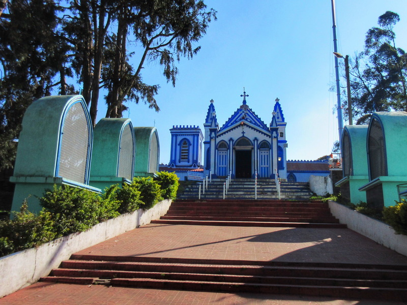
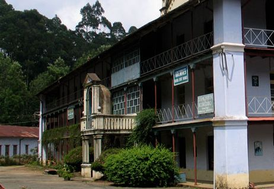
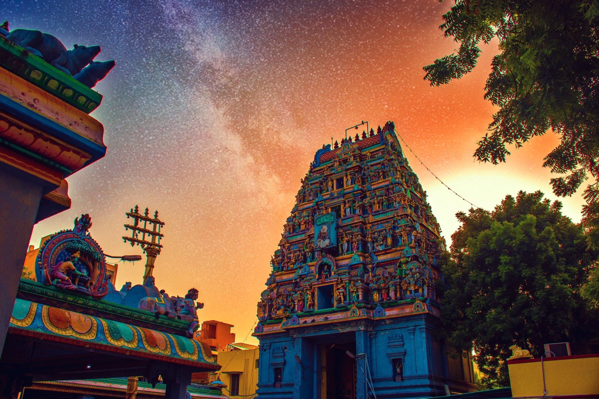
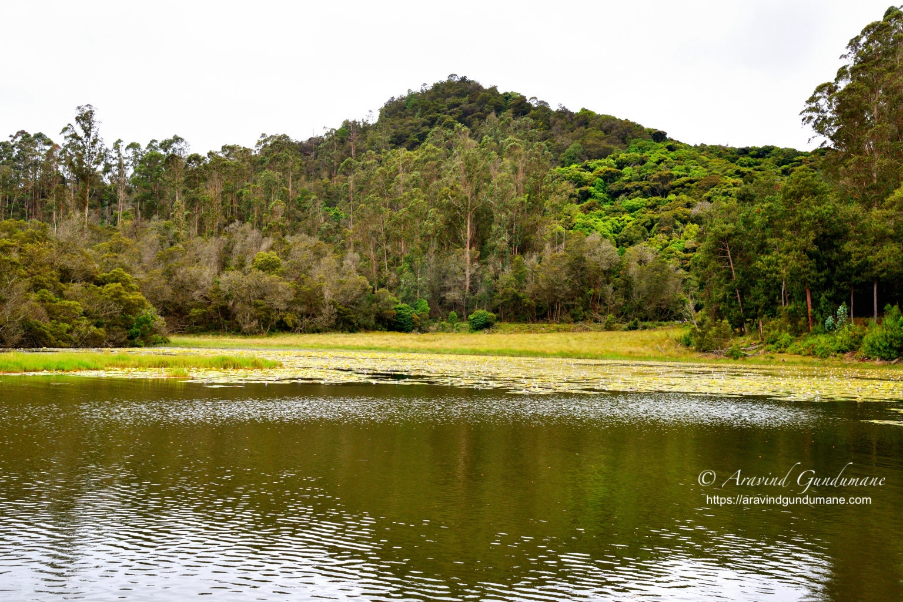
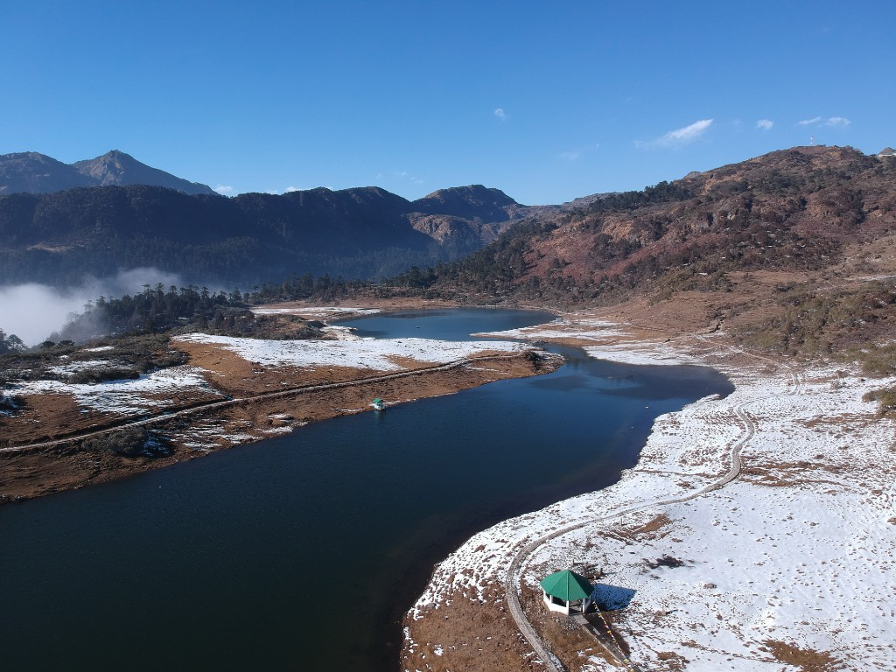
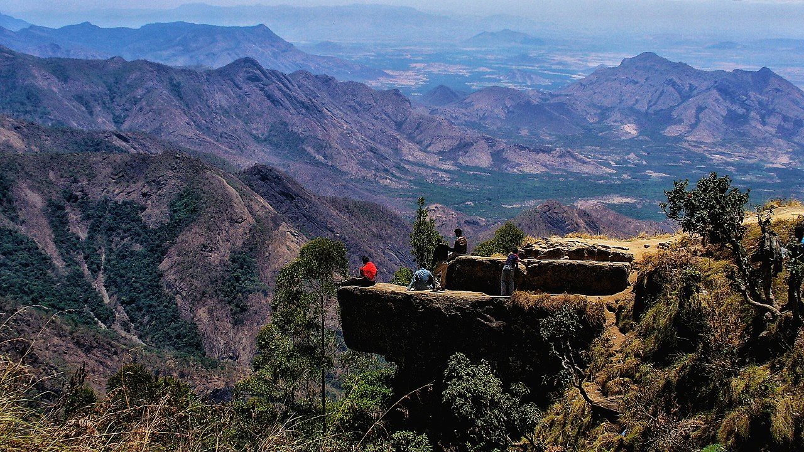
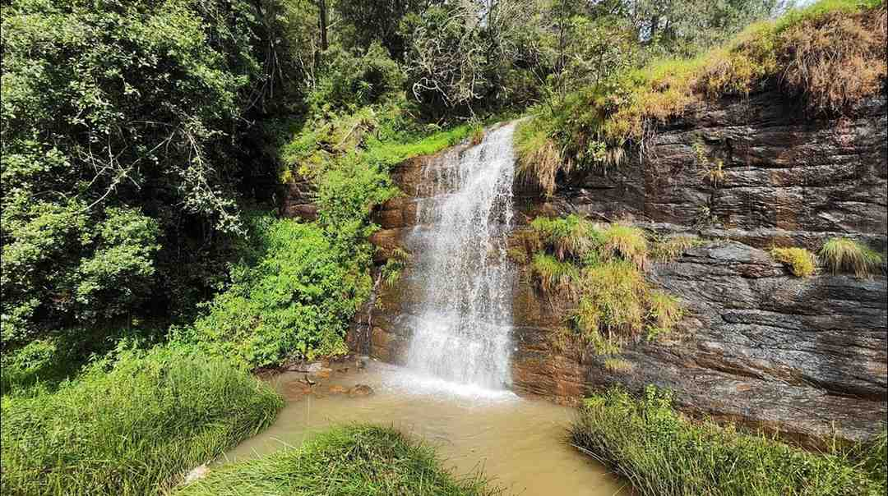
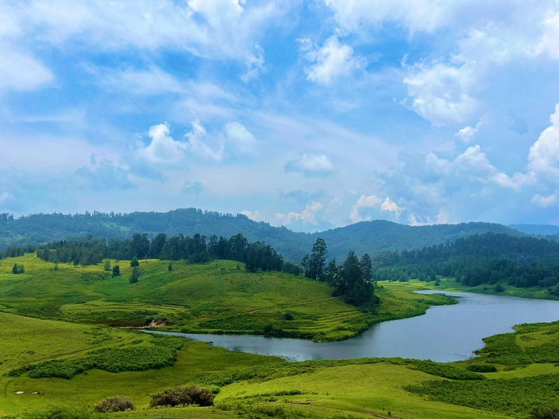
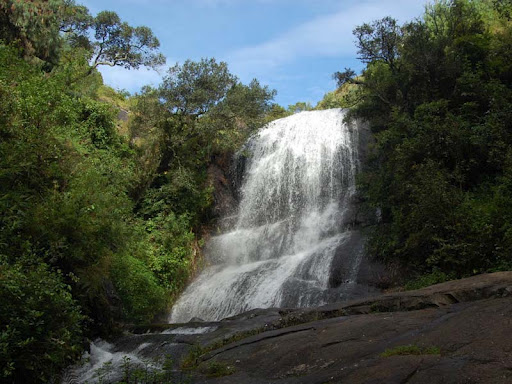
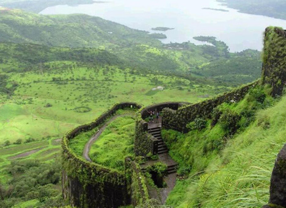

La Saleth Church in Kodaikanal is a significant landmark with rich history and architectural beauty.
Key points include
its construction in 1863, its dedication to Our Lady of La Salette, the stunning
stained-glass
windows, and its annual
festival in August.
1. Historical Significance:
The church was built in 1863, marking it as the first Catholic church in Kodaikanal. Its
construction
was funded by a
Belgian woman who sought healing for her daughter and dedicated the church to
Our Lady of La
Salette.
2. Architectural Beauty:
The church is known for its unique Tamil-French architectural style and its beautiful stained-glass
windows, which were
painted by a French noblewoman, Madame Coile.
3. Annual Festival:
La Saleth Church hosts a grand festival every August, which is a nine-day celebration dedicated to
Our Lady of La
Salette. The festival attracts a large number of both local and foreign visitors.
4. Spiritual Atmosphere:
The church is a place for prayer and meditation, offering a peaceful and serene environment for
visitors seeking solace
and spiritual connection.
5. Social Welfare Activities:
Besides its religious importance, the church is involved in various social welfare activities,
including supporting
schools, orphanages, and health centers, contributing to the upliftment of the
local community.

Shenbaganur Museum, also known as the Shembaganur Museum of Natural History, is a significant attraction
in Kodaikanal,
Tamil Nadu, known for its natural history and cultural artifacts. The museum is noteworthy for its
collection of rare
and exotic species of animals, birds, and insects, as well as its exhibits on anthropology, handicrafts,
and the
Palaiyar tribe.
1. Diverse Natural History Collection:
The museum houses a wide array of preserved animals, birds, insects, and reptiles, showcasing the rich
biodiversity of
the Western Ghats.
2. Anthropological and Cultural Exhibits:
It features exhibits on the Palaiyar tribes, their way of life, and artifacts, providing insights into
the cultural
heritage of the region.
3. Orchidarium:
The museum boasts a notable orchidarium with over 300 species of native and exotic orchids, making it a
must-visit for
orchid enthusiasts.
4. Archaeological Treasures:
The museum also displays archaeological finds, including coins from various kingdoms and countries,
adding to its
historical significance.
5. Historical Significance:
Established over a century ago, Shenbaganur Museum stands as one of the oldest museums in India,
preserving and
showcasing the natural and cultural history of Kodaikanal and its surroundings.

The Kurinji Andavar Temple in Kodaikanal is significant for its connection to the rare Kurinji
flower, its Lord Murugan
deity, and its beautiful architecture and serene ambiance. The temple is
also known for offering
breathtaking views of
the Palani Hills and the surrounding valleys.
1. Deity:
The temple is dedicated to Lord Murugan, also known as the God of the Hills, and is referred to
as
Kurinji Andavar,
which highlights the connection between the hill region and the deity,
according to
escape2explore.
2. Kurinji Flower:
The temple is named after the Kurinji flower (Strobilanthes kunthianus), which blooms once every
12
years on the
surrounding hills, according to escape2explore.
3. Architecture:
The temple showcases a blend of traditional Dravidian architectural styles with unique regional
influences, according to
Thrillophilia.
4. Scenic Views:
The temple offers stunning panoramic views of the Palani Hills and the Vaigai Dam, making it a
popular spot for tourists
and photographers.
5. Serene Ambiance:
The temple is known for its peaceful and quiet atmosphere, providing a serene environment for
devotees and visitors.

Berijam Lake, a serene freshwater reservoir near Kodaikanal, is known for its scenic beauty, rich
biodiversity, and
ecological significance. It's a popular picnic spot and offers opportunities for birdwatching and
wildlife sightings. To
visit, you need a permit from the forest department, and it's best to arrive early in the morning as the
lake area can
get crowded, and fog can set in after 1:00 PM.
1. Scenic Beauty and Tranquility:
Berijam Lake is renowned for its picturesque setting amidst dense forests and its calm, clear waters.
The pristine
environment offers a peaceful and relaxing experience.
2. Ecological Significance:
The lake is part of the Palani Hills Wildlife Sanctuary and supports a variety of flora and fauna,
including bison,
Indian elephants, Nilgiri langurs, and deer.
3. Permit Required:
Access to the lake requires a permit from the Kodaikanal Forest Department. It's recommended to obtain
this permit in
advance or early in the morning, as there can be queues.
4. Limited Visiting Hours:
The lake is open from 9:00 AM to 3:00 PM.
5. Picnic Spot and Wildlife Viewing:
Berijam Lake is a great place for picnics and offers opportunities for birdwatching and observing
wildlife in their
natural habitat.

Panga Teng Tso Lake (PT Tso), located in Tawang, Arunachal Pradesh, is a picturesque glacial lake
known for its stunning
natural beauty and serene atmosphere. It's a popular tourist destination
offering breathtaking views
of snow-capped
Himalayan mountains and vibrant blue lapis flowers
in the summer.
1. Scenic Beauty:
The lake is surrounded by snow-capped Himalayan mountains and offers mesmerizing views of
the
landscape.
2. Tranquil Environment:
Panga Teng Tso Lake is known for its peaceful and serene atmosphere, making it a great place to
relax and connect with
nature.
3. Cultural Significance:
The lake holds spiritual importance for the Monpa tribe, who consider it a sacred place.
4. Tourist Attraction:
It is a major tourist attraction in Tawang, drawing visitors with its natural beauty and
opportunities
for
sightseeing.
5. Seasonal Changes:
The lake and its surroundings transform with the seasons, with snowy landscapes in the winter and
blooming lapis flowers
in the summer.
6. Altitude:
The lake is situated at an altitude of around 12,000 feet (3,657 meters) in the Eastern Himalayas.

Green Valley View in Kodaikanal offers a stunning 5,000-foot view of the valley below, including the
Vaigai Dam. It's a
popular spot for photography due to its scenic beauty and is known for cool breezes and a peaceful
atmosphere.
Previously called Suicide Point, it's now a safe and transformed area, though monkeys can be present.
Nearby attractions
include Pillar Rocks, Bear Shola Falls, and Kodaikanal Lake.
1. Panoramic Views:
The viewpoint offers breathtaking panoramic views of the valley, including the Vaigai Dam.
2. Elevation:
It's located at a high elevation of 5,000 feet, providing a bird's-eye perspective.
3. Previously Suicide Point:
The area was once known as Suicide Point due to its dangerous slope, but it has been made safe for
visitors.
4. Monkeys:
Be aware that monkeys frequent the area and may approach visitors, so be cautious with food and
belongings.
5. Nearby Attractions:
It's situated close to other popular Kodaikanal attractions like Pillar Rocks, Bear Shola Falls, and
Kodaikanal Lake.

Fairy Falls in Kodaikanal is a beautiful, less crowded waterfall known for its serene atmosphere
and
picturesque
setting. It's located in the Western Ghats, 5km from Kodai Lake. Key highlights
include a winding
trail through tea
gardens, the falls' cascading nature, a natural plunge pool, and
the opportunity to enjoy the sounds
of nature.
1. Secluded and Peaceful:
Fairy Falls offers a tranquil escape, less crowded than other Kodaikanal attractions, allowing for
a
more intimate
experience with nature.
2. Cascading Waterfall:
It's a beautiful, cascading waterfall, especially magnificent during the monsoon season when the
water flow is at its
peak.
3. Scenic Surroundings:
The falls are surrounded by lush greenery, tea gardens, and forests, making it an ideal spot for
nature lovers and
photography enthusiasts.
4. Hiking Trail:
A winding trail through coffee plantations and dense forest leads to the falls, offering a pleasant
hiking
experience.
5. Natural Plunge Pool:
The falls create a natural plunge pool at the bottom, where visitors can enjoy swimming.

Mannavanur Lake, located in Kodaikanal, Tamil Nadu, is a beautiful freshwater lake known for its serene
environment and
surrounding natural beauty. It's a popular destination for picnics, birdwatching, and nature walks.
1. Scenic Location:
The lake is situated amidst the rolling hills of the Nilgiris and is surrounded by lush forests of the
Western Ghats,
offering picturesque views.
2. Tranquil Environment:
Mannavanur Lake is known for its peaceful atmosphere, making it an ideal spot for relaxation and
enjoying nature's
tranquility.
3. Abundant Flora and Fauna:
The area around the lake is rich in biodiversity, with various species of birds, including migratory
birds, and wildlife
like wild boars, deer, and monkeys.
4. Activities:
Visitors can enjoy activities like birdwatching, picnicking, and taking coracle rides on the lake.
There's also a sheep
and rabbit farm nearby that offers a unique experience.
5. Nature Lover's Paradise:
The lake's pristine blue waters, coupled with the surrounding greenery, make it a haven for nature
enthusiasts and
photographers.
6. Accessibility:
Mannavanur Lake is approximately 35 kilometers from Kodaikanal and can be reached by road. The journey
itself offers
scenic views of pine and eucalyptus trees.

Bear Shola Falls, a seasonal waterfall near Kodaikanal, is known for its serene beauty and the
legend of bears visiting
the area. It's a popular picnic spot and offers opportunities for trekking and
photography,
especially during the
monsoon season when the falls are at their fullest.
1. Seasonal Waterfall:
Bear Shola Falls is a seasonal waterfall, meaning its flow is heaviest during the monsoon season
(roughly June to
September).
2. Legendary Name:
The falls are named after bears that were said to frequent the area to drink water.
3. Location and Distance:
Located in the Nilgiri forests of the Western Ghats, it's approximately 3 km from the
Kodaikanal bus
station.
4. Activities:
Visitors can enjoy activities like trekking, hiking, picnicking, and photography, especially amidst
the lush green
surroundings.
5. Scenic Spot:
The falls are surrounded by dense forests, offering picturesque views and a peaceful atmosphere,
making it a great spot
for nature lovers and those seeking a tranquil escape.

Silent Valley View in Kodaikanal offers stunning panoramic views of the surrounding landscape, making it
a popular
destination for nature lovers and photographers. Key points about the location include: it is situated
near the Pillar
Rocks on the Berijam Lake road, it is known for its lush greenery and fresh air, the best time to visit
is early morning
or late afternoon, and it provides a great spot to view the sunrise or sunset. Additionally, it's
important to note that
the valley is deep, so children should be accompanied by adults, and the area is known for its rich
biodiversity.
1. Scenic Views:
Silent Valley View offers a breathtaking panorama of the valley, including the Kambam valley and Vaigai
River, the
Palani Hills, and the undulating plains below.
2. Location:
It is located on the Berijam Lake road, not far from the Pillar Rocks, making it easily accessible for
visitors.
3. Best Time to Visit:
The early morning and late afternoon hours are ideal for experiencing the scenic beauty of the valley,
with the rising
or setting sun casting beautiful colors on the landscape.
4. Nature and Wildlife:
The area is known for its rich biodiversity, with plenty of greenery and opportunities to spot various
species of flora
and fauna.
5. Accessibility:
While the view point itself is easily accessible, visitors should be aware that the valley is deep and
children should
be supervised.